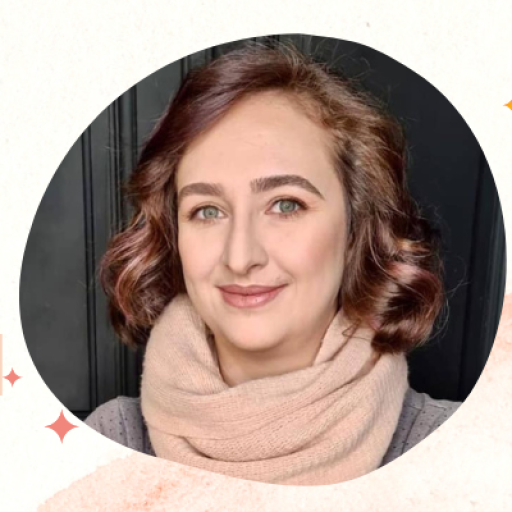

Program holistic autoghidat · 12 teme · 364 pagini color

Devino creatorul propriei tale vieți
Creația Cartea Vieții Conștiente vine în ajutorul tuturor celor care au ajuns în acel punct din viața lor în care simt că își doresc mai mult de la viață — care au experimentat suficient rătăcirea, uitarea, suferința și dualitatea și care, îmbogățiți cu înțelepciunea tuturor experiențelor lor, sunt pregătiți să pășească mai departe.
Pentru toate Femeile dornice să evolueze și să revină la conștiința propriei lor bogății, la puterea lor interioară, la trăirea valorilor personale și la atingerea potențialului lor maxim.
Ce conține
Dacă rezonezi cu toate acestea, acceptă invitația de a păși alături de mine pe această Cale. Comandă chiar acum Cartea Vieții Conștiente și să pornim la drum!
Scopul și beneficiile
Femei și bărbați aflați într-un moment de tranziție interioară, care își doresc un instrument practic de lucru cu sine — fără a depinde de un facilitator. Nu este nevoie de experiență anterioară în dezvoltare personală.
Deschidere, curiozitate și puțin timp pentru tine în fiecare zi. Programul este autoghidat: îl parcurgi în ritmul tău, cu instrumentele incluse.
Există un program pe care trebuie să îl respect?
Programul ți-l faci chiar tu, așa cum este potrivit pentru tine, cu ajutorul ghidului — reușind să devii mai eficientă, să ai mai multă claritate și să îți faci timp pentru tine și pentru ceea ce este cu adevărat important în viața ta.
Pot parcurge acest program chiar dacă nu stau prea bine cu timpul?
Acest program autoghidat a fost creat de o femeie ocupată — antreprenor, mamă a 3 copii, soție — pentru femei complete și ocupate. Deși este necesar să interacționezi cu el (și cu tine) în fiecare zi pentru maximum de beneficii, nu ai nevoie de mai mult de 5–15 minute pe zi. Importantă este consecvența și calitatea, nu cantitatea timpului alocat.
Parcurgerea acestui program presupune și alte costuri ulterioare?
Nu. Totul este la vedere și la dispoziția ta. Dacă parcurgi integral ghidul, în ritmul și stilul tău, și pui în aplicare cele scrise, nu mai ai nevoie de nimic altceva pentru a obține rezultatele dorite. Există și un grup închis de Facebook pe care îl poți accesa gratuit, dacă îți place să împărtășești experiențele cu alte suflete asemenea.
Dar dacă nu mă descurc singură?
Dacă pe parcurs descoperi noi blocaje, nevoi sau dorințe, ori simți nevoia să intri mai profund într-una din teme, mă poți contacta și putem stabili împreună ce s-ar potrivi cel mai bine pentru tine, în paralel cu lucrul individual alături de ghidul tău.
Pentru orice altă întrebare despre conținut sau livrare, scrie-ne la contact@saymararyon.com.

H.M. Iulia Ioana — coach holistic, art-terapeut prin Mandale de Lumină, autoare și creatoare de programe transformaționale.
Inspirație, resurse și invitații la programele Simply Be! — direct în inbox.